Next: Answers to Selected Problems Up: More Applications Previous: 3D Computer Graphics Contents Index
Occasionally we will find that we must evaluate equations like
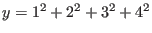
or
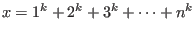
. It would be useful to have functions which would give us exact answers
for arbitrary values of  and
and  without having to perform expansions and huge amounts of
arithmetic. We will show a method for finding such functions in this section.
without having to perform expansions and huge amounts of
arithmetic. We will show a method for finding such functions in this section.
For our purposes we define a sequence as an ordered list of scalars. In other words, there is a first scalar, a second, and so on. An infinite sequence is one that continues forever. Sequences are often represented by an algorithm which generates the next term in the sequence.
A series is the sum of the members of a sequence. An infinite series is the sum of an infinite sequence. We can write an infinite series using the symbols 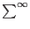 . If the members of a sequence tend to become smaller as we continue down the list, then sometimes the infinite series made from an infinite sequence of this kind converges to a value. Calculus is needed to understand infinite series. We are only interested in finite series in this text, all of which obviously can be evaluated as a finite number.
Given a positive integer  we define
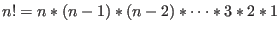
. We say 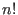
is
we define
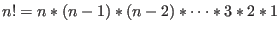
. We say 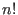
is  factorial.
Thus,
factorial.
Thus,  ,
,  ,
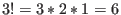
,
,
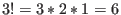
,
 , and so on. We also define
, and so on. We also define  . Factorials are
used to calculate the number of ways objects may be arranged in order. For the letters
. Factorials are
used to calculate the number of ways objects may be arranged in order. For the letters  ,
,  ,
,  there are
there are
 ways to arrange them. They are 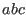
, 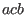
, 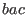
, 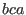
,
ways to arrange them. They are 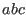
, 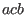
, 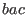
, 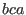
,  and
and  .
Each arrangement is called a permutation.
.
Each arrangement is called a permutation.
If we have 4 letters,  ,
,  ,
,  and
and  , the number of ways we can arrange them is 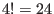
. How many ways
are there to take the four letters two at a time? We supply the list below.
, the number of ways we can arrange them is 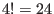
. How many ways
are there to take the four letters two at a time? We supply the list below.

The formula to calculate the number of  distinct objects taken
distinct objects taken  at a time is
at a time is
In the list of permutations we gave, notice that we have 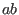 and 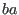 counted separately. This is because order is important. If order is not important, and we wish to know how many combinations we can have, then the formula is
Please note that the use of braces in the left part of the equation does not specify a matrix. In this
context it stands for the choose function.
It means we require the number of combinations of
 distinct objects chosen
distinct objects chosen  at a time. We read it as
at a time. We read it as  choose
choose  .
A table listing the combinations of choices of two letters from
the four letters 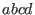
is
.
A table listing the combinations of choices of two letters from
the four letters 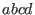
is
The number of combinations is given by
We will be interested in acquiring the coefficients when we expand  for
for
 and
some positive integer
and
some positive integer  . We will use the choose function to state the binomial theorem.
. We will use the choose function to state the binomial theorem.
We will not prove this theorem here. We are interested in the case when 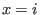
and  for some
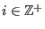
(
for some
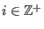
( is a positive integer). The theorem then gives us
is a positive integer). The theorem then gives us

So we can simplify and write

We can sum both sides of the equation with  from
from  to
to  .
.
Because we are adding and subtracting many of the same quantities, the left side of the equation can be simplified to

The right side of the equation can also be rewritten as
Replacing the simplified sections back into the original equation gives us
If we let  , then we have
, then we have

If we define a function 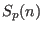 as
we can then, finally, write the equation we would like to use
Let us use the above formula to write out a system for the first few equations.
| 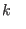 | |||
| 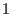 | 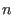 | 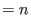 | |
| 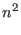 | 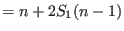 | ||
| 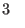 | |||
| 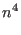 | 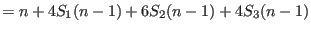 | ||
For 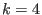 , we can write the matrix equation for the above system as

The  matrix is triangular and all the diagonal entries are non-zero
so we can compute the inverse and write
matrix is triangular and all the diagonal entries are non-zero
so we can compute the inverse and write

 gives us sums of
gives us sums of  terms. We'd like
terms. We'd like  terms so we will use the
fact that
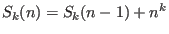
. If we call the
terms so we will use the
fact that
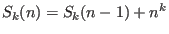
. If we call the  matrix
matrix  , then this means
we will add 1 to 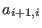
(the number
immediately below the main diagonal scalars).
, then this means
we will add 1 to 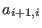
(the number
immediately below the main diagonal scalars).
From our definition
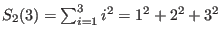
.
By matrix multiplication we find that
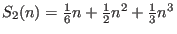
.
So then
 . Obviously for large values
of
. Obviously for large values
of  there is significantly less arithmetic involved in computing the sum using the
formulae generated by the matrix inverse.
there is significantly less arithmetic involved in computing the sum using the
formulae generated by the matrix inverse.
The numbers in the first column of the final form of
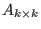
are the first  Bernoulli numbers.
These numbers appear in many applications. For example, using calculus, these numbers
are used to generate an infinite series which represents the cotangent function.
Euler applied these numbers to calculate exact values for infinite series of the form
Bernoulli numbers.
These numbers appear in many applications. For example, using calculus, these numbers
are used to generate an infinite series which represents the cotangent function.
Euler applied these numbers to calculate exact values for infinite series of the form
No one has yet to show exact values for

when